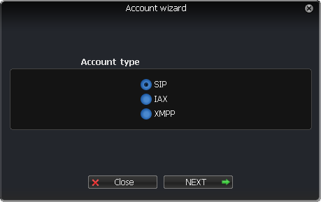
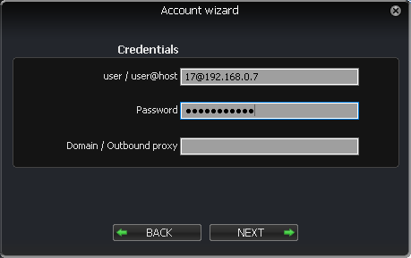
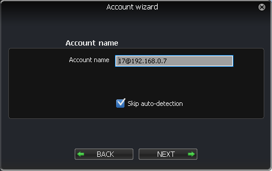
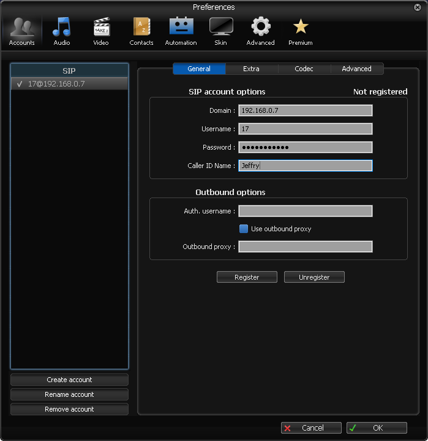
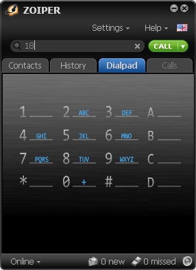
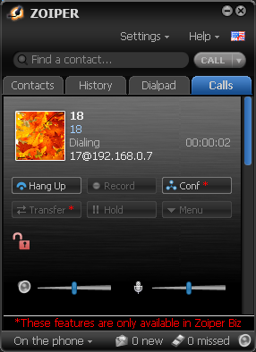

1
Proses komunikasi diawali dengan sebuah pesan atau informasi yang harus
dikirimkan dari perangkat satu ke perangkat lain.
2
Pesan atau informasi tersebut selanjutnya dikonversi kedalam bentuk
biner atau bit yang selanjutnya bit tersebut di encode menjadi sinyal.
Proses ini terjadi pada perangkat encoder.
3
Sinyal tersebut kemudian oleh transmitter dikirimkan atau
dipancarkan melalui media yang telah dipilih.
4
Dibutuhkan media transmisi (radio, optik, coaxial, tembaga) yang baik
agar gangguan selama disaluran dapat dikurangi.
5
Selanjutnya sinyal tersebut diterima oleh stasiun penerima.
6
Sinyal tersebut didecode kedalam format biner atau bit
yang selanjutnya diubah kedalam pesan atau informasi
asli agar dapat dibaca atau didengar oleh perangkat penerima.
Pastikan Zoiper dan Server VoIP berbasis SIP sudah terpasang
dan ada akses internet.
1
Jalankan aplikasi Zoiper lalu pergi menuju "Settings" > "Create a new account"
dan pilih "SIP"

2
Masukkan "user@host" dan password yang kalian buat di server VoIP

Centang bagian "Skip auto-detection"

3
Masuk menuju "Settings" > "Preferences", masukkan pada bagian
"Caller ID Name" dengan nama user kalian dan klik "Register" lalu "OK"

4
Menuju ke bagian "Dialpad" dan ketikkan nomor ID yang ingin dipanggil
klik "CALL"

5
Jika berhasil akan seperti ini

Voice over Internet Protocol
( juga disebut VoIP, IP Telephony, Internet telephony atau Digital Phone )
adalah teknologi yang memungkinkan percakapan suara jarak jauh
melalui media internet.
Data suara diubah menjadi kode digital dan dialirkan melalui
jaringan yang mengirimkan paket-paket data,
dan bukan lewat sirkuit analog telepon biasa.
Prinsip kerja VoIP adalah mengubah suara analog yang didapatkan
dari speaker pada Komputer menjadi paket data digital,
kemudian dari PC diteruskan melalui Hub / Router / ADSL Modem
dikirimkan melalui jaringan internet dan akan diterima
oleh tempat tujuan melalui media yang sama.